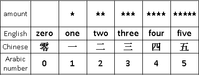
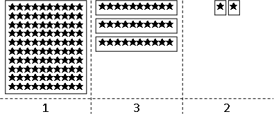
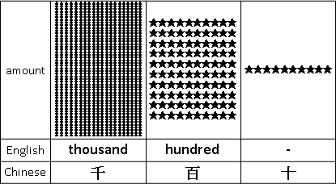
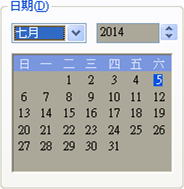

Base
記載數量
想要記載一個數量，最直觀的方式是：一個符號、重複數次。
♥ ♦♦ ☁☁☁ ★★★★★★★★★★★★★★★★★★
第一種技術：分堆
一個個數，太花時間。為了節省時間，可以嘗試分堆。最常見的分堆方式，是十個一堆。如果有很多堆，那麼十堆再合成一大堆；如果有很多大堆，那麼十大堆再合成一大大堆；以此類推。
hard way: ★★★★★★★★★★★★★★★★★★★★★★★★★★★★★★★★★★★★★★★★★★★★ ★★★★★★★★★★★★★★★★★★★★★★★★★★★★★★★★★★★★★★★★★★★★ ★★★★★★★★★★★★★★★★★★★★★★★★★★★★★★★★★★★★★★★★★★★★ easy way: ★★★★★★★★★★ ★★★★★★★★★★ ★ ★ ★★★★★★★★★★ ★★★★★★★★★★ ★★★★★★★★★★ ★★★★★★★★★★ ★★★★★★★★★★ ★★★★★★★★★★ ★★★★★★★★★★ ★★★★★★★★★★ ★★★★★★★★★★ ★★★★★★★★★★ ★★★★★★★★★★
以此類推的過程，我們習慣採用固定數量，這個數量稱做「底數Base」。例如上例的底數就是十。
然而也有例外。例如時間：六十秒一分、六十分一時、二十四時一日，底數不是固定數量。
第二個技術：命名
一個個數，太花時間。為了節省時間，可以替每種數量取不一樣的名字；換句話說，用不一樣的符號代替每種數量。
長長一串數量，變成短短一個符號，人生充滿歡樂！
第三個技術：位數
然而，越多符號，越難背誦。你能想像背誦一百種符號代替一百種數量嗎？符號還是少點好。
解法是同時使用第一個技術和第二個技術，令符號數量等於底數。例如底數是十，可以使用0123456789等十個符號。當數量大於等於十，十個形成一堆，記載在左邊一點的位置，變成10。當數量累積十堆，十堆形成一大堆，記載在更左邊一點的位置，變成100。這是地球上最流行的記載方式。
除了替每一種數量取名字，有些語言還會替每一種數量級取名字，讓數字之間穿插數量級符號。這是題外話。
132 英文：one hundred thirty-two （hundred是數量級的符號） 中文：一百三十二 （百、十是數量級的符號）
選擇底數
我們可以選擇自己喜歡的底數。底數不能是零、不能是一。底數是二，稱做「二進位」，使用01兩個符號。底數是三，稱作「三進位」，使用012三個符號。底數是十六，稱做「十六進位」，使用0123456789ABCDEF十六個符號。底數超過三十六，那麼必須額外引入一些符號，才夠用。
底數寫於數字的右下角，用括號包住。
101₍₂₎ 二進位，數字是101 73F₍₁₆₎ 十六進位，數字是73F
同樣的數量，使用不同的底數，往往得到不同的數字。
★★★★★★★★★★★★★★★★★★ 10010₍₂₎ ★★★★★★★★★★★★★★★★★★ 18₍₁₀₎ ★★★★★★★★★★★★★★★★★★ 12₍₁₆₎
同樣的數字，使用不同的底數，往往得到不同的數量。
11₍₂₎ ★★★ 11₍₁₀₎ ★★★★★★★★★★★ 11₍₁₆₎ ★★★★★★★★★★★★★★★★★
選定底數，把數量變成數字。
選定底數，把數字變成數量。
C語言當中的atoi()字串轉整數函式，其實就是「選定底數10，把數字變成數量」。
改變底數（進制轉換）
10010₍₂₎ = ?₍₁₆₎
令數量維持相等，給定原數字、原底數、新底數，求新數字。
演算法和程式碼交給讀者思考！
UVa 343 344 355 377 389 446 448 575 594 619 636 10019 10469 10473 11005 11121
延伸閱讀：以多項式作為模型
一個數字可以改寫成一個多項式。
10010₍₂₎ ---> 1x⁴ + 0x³ + 0x² + 1x¹ + 0x⁰ (let x = 2) 18₍₁₀₎ ---> 1x¹ + 8x⁰ (let x = 10) 73F₍₁₆₎ ---> 7x² + 3x¹ + 15x⁰ (let x = 16)
以多項式當作模型之後，「選定底數，把數字變成數量」就變成了「x代入底數」，其演算法正是「Horner's Rule」。
數字與底數，在數學家眼中，可以藉由多項式一以貫之。多項式的用途實在很廣。
Fibonacci Base
Fibonacci Sequence / Fibonacci Number
1 1 2 3 5 8 13 ...，大家應該都懂，所以就不介紹了。
http://www.geeksforgeeks.org/check-number-fibonacci-number/
UVa 495 11582
Fibonacci Base（Zeckendorf's Theorem）
大家做做題目、找找資料應該就懂了，所以就不介紹了。
UVa 763 948
Roman Numerals
Calendar
春雨驚春清穀天，夏滿芒夏暑相連，
秋處露秋寒霜降，冬雪雪冬小大寒。《二十四節氣歌》
曆法
http://en.wikipedia.org/wiki/Calendar
網路已有詳細資料，此處不再贅述，僅提供練習題。
1752年9月曾經調整過日曆。
UVa 300 602 10070 11356